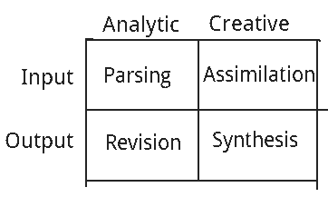

Nancy’s Guide to Creative Self Realization
Table of Contents
I follow this guide in carrying out my own projects!
this is a big WIP!
Introduction?????????
To oscillate back and forth between being fueled with inspiration and coming up with new ideas is my creative dream! The creative cycle is the cycle of taking in fun ideas and churning out new fun stuff.
I like to think that in order for something meaningful to come out of the creative machine, something meaningful has first to go into the the creative machine. To keep the flow of creativity going, I have to keep feeding myself with new and exciting things.
I like to imagine that my brain is a very large billiards table with millions of billards balls. In order for interesting things to happen, there needs to be kinetic energy put into the system. That kinetic fuel comes in the form of meaningful, comprehensible input. When this happens, I get inspired.
If I consume something that isn’t meaningful or comprehensible, it goes in one ear, passes between all the billards balls, hardly rattling a thing, and goes right out the other ear. In order for an exchange of kinetic energy from the outside world to the billiard balls in my brain to occur, it has to be something that I intrinsically and immediately find value and excitment in! I have to allow myself to be having as much fun as possible.
There are two main topics to discuss here: the learn drive and the processes involved in the creative cycle.
The creative cycle
I like to think of the creative cycle as a 2x2 matrix consisting of (analytic, creative) × (input, output)! Namely, there is an analytic and creative aspect to getting creative fuel into your brain, and there is a creative and analytic aspect to getting new creative ideas back out of your brain.
TODO Learn drive
In order for something to get me going like this, it has to be within the a certain threshold dictated by my learn drive.
The learn drive is like a naturally occuring spaced-repetition algorithm implemented by the brain itself! The brain knows when its time to revisit some topic, because it leaves you itching to get back to it! And the brain knows when its time to give it a rest, because you start to get bored!
TODO Learning, consumption, and creativity
There is a very tight connection between explicitly learning new things, consuming things, and creativity.
Creative input
I like to break the processes of getting creative fuel into my brain into an analytic part and a creative part: the (likely subconscious) parsing of the information (figuring out what it actually is) and the evaluation and assimilation of it in the context of everything I care about.
Analytic parsing
There is no such thing as “pure information”. Information is inseparable from its encoding! There is always some arrangement of symbols in addition to the meaning found in it.
In this context, I like to think of a spectrum of encodings that ranges from external, when the information is outside your brain, to internal, where the information is inside your brain. Information encoding is continuously being transformed from one end to the other as it passes between our brains and the outside world.
On the extreme external end of the spectrum we have the physical encodings which are suitable for our senses to receive. For example, an image is encoded in the physical world as a pattern of light that can be meaningfully received by our eyes, and natural language is encoded as sound pressure waves that can be meaningfully received by our ears.
Our senses then take convert these physical world encodings into the very beginnings of neural encodings. And the information continues to be filtered up through a series of neural transformations from our lower level sensory nervous system to our cognition.
This series of transformations from the low level physical encoding to the high level cognitive encoding is what constitutes the analytic parsing process.
When I say that its important for the kinetic fuel to be comprehensible, this is what I mean. If it’s not comprehensible, then the analytic parsing stage fails! The brain simply isn’t able to convert the information from low level signals into meaningful higher level signals that we can think about!
TODO Creative evaluation and assimilation
Once the information is inside my brain, it has to find relevance among all the other ideas already inside my brain! This is finding value in it. And when I say that it’s important for the kinetic fuel to be meaningful, this is what I mean!
Creative output
I also like to think of there as being a creative part and an analytic part to my churning out new creative ideas: the synthesis of new ideas and the revision and formalization of those ideas.
TODO Creative synthesis
TODO Analytic revision
A matrix of processes
Notice that there are two processes related to input and two processes related to output. And notice that there are two creative processes and two analytic processes! Each of the four processes can be put into a 2x2 matrix!

The pillars of the creative cycle
I sort my projects into these categories, as distinguished in the primary role the play in the creative cycle:
- Consumption (Input)
- Pieces of media I want to consume or experiences I want to have!
- Learning (Assimilation)
- Knowledge to acquire and skills to develop!
- Creativity (Output)
- Objects of external self-realization!
Of course things don’t fall perfectly into these categories! In fact, all projects involve some degree of all of these things. For example, to consume something meaningful is inevetibly to learn something and to fuel the cogs of creativity, and to realize your creative ideas with real words and other crafts is to solidify your own understanding.
TODO Literate programming
(this is a copy pasted discord message, i gotta tidy it up sometime)
oooh okay okay okay i like the idea of “literate programming” , where u basically merge code and writing about the code in the same document , but like, where the writing sort of takes the front seat so different from like, writing code , and commenting the code, its the flip of that, its like, writing about the system you’re building in natural language, and then interject real code into that!! so its kinda like writing an essay !! i rly like this bc i also really like writing n talking about the stuff im building , n also bc im always interested in finding ways to present them im so interested in code and making code nice n elegant n beautiful , and i often put way more energy into this , even when an end user of the software never sees the code at all basically im much more code oriented than practical-use-of-the-result oriented !! but i think literate programming is a good way to sort of make all of this more visible and explicitly bring it more up front!! it cld be like , writing blog posts that u can Execute!! XD
but also, i want to blend the idea of literate programming with what i wanna do in video form on youtube , im wanting to have a video-scripting language that is oriented around the writing, but also lets u write in stuff about the scene that its being presented in, so kinda like a movie or play script, but that can be formally understood by a compiler to automate in part or whole the production of animated presentations !!
so like, basically, imagine writing an essay about something u love, except its a play !! XD i love this idea !! it gives u not just language to present ur ideas, but makes explicit the use of visuals n narrative to present it too, i think this wld be such a cool n fun way to present stuff thats otherwise usually rly abstract n dry
so, a blend of essay, code, and script(of the play/movie kind) that can be read, executed, and watched , all written and produced in a unified effort !!
TODO meta
this is where ii talk abt what i wanna write here loll i think itd b fun to add lots of illustrations n stuff hehe
also i should totally add meta sections to lots of my articles bc its useful for margin notes n stuff XD